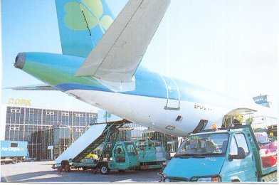
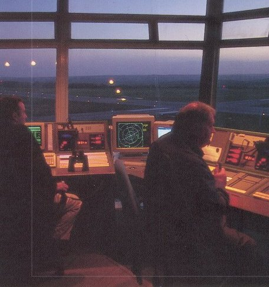
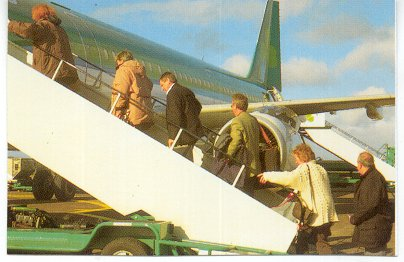

Aer Rianta |
Cork Airport |
|
SITE INDEX
|
|
|
Passenger Traffic Cork Airport is one of the fastest growing regional airports in Europe. In 1999 passenger number exceeded 1.5 million for the first time. This is expected to grow to 1.7 million in 2000 with passenger numbers fast approaching 2 million, all indicators are for traffic to grow to 2.5 million passengers in the next 5 years. Many International Airlines are regular viitors to Cork Airport. Currently there are 8 scheduled airlines and over 32 charter airlines serving Cork International Airport. Four cargo airlines are presently based at Cork International Airport serving the European markets daily. These are DHL, TNT, UPS, and Channel Express. Technical Details. Runway A 2133 metres or 7000 feet. Cat II Runway B 1300 metres or 4300 feet. Cat I Apron 12 stands. Car Parking 3,500 spaces |
 |
|  |  |